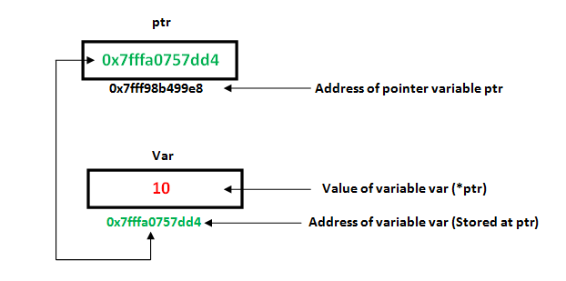

En programació bàsica hem pogut veure com les variables són informació localitzada en certes posicions de memòria que el nostre ordinador ens reserva,
en cas de que volguéssim accedir a aquestes haviem de dirigir-nos amb el nom de la variable. D'aquesta forma el programa no s'ha de preocupar de
la adressa de la memòria, només del nom de la variable.
int x = 0;
Adreça: 0x7ffeb2ec600c
En un programa de C++, la memòria d'un ordinador és una successió de cel·les d'un byte. Aquestes cel·les treballen de tal forma que permet que
informació que representa més d'un byte ocupi cel·les consecutives.
Els punters són representacions simbòliques d'adreces. D'aquesta manera podem crear i manipular estructures de dades dinàmiques.
Iterar sobre elements en matrius o altres estructures de dades és un dels principals usos dels punters.
L'adreça de la variable amb la qual estem treballant s'assigna a la variable punter que apunta al mateix tipus de dada
(com ara un int o una cadena).

Declaració i us de punters
Un punter és una variable el valor de la qual és l'adreça d'una altra variable. Com qualsevol variable o constant,
hem de declarar un punter abans de poder treballar-hi. La forma general d'una declaració de variable punter és:
tipus *nomVariable;
Aquí, el 'tipus' és el tipus de base del punter, ha de ser un tipus C++ vàlid i 'var-name' és el nom de la variable punter.
L'asterisc que hem utilitzat per declarar un punter és el mateix asterisc que fem servir per a la multiplicació.
Però, en aquesta declaració s'utilitza l'asterisc per designar una variable com a punter.
int var = 20; // Declaració de variable int
int *ip; // Declaració d'un punter
ip = &var; // Guardar l'adreça de var al punter ip
cout << "Valor de var: ";
cout << var << endl;
cout << "Adreça guardada a ip: ";
cout << ip << endl;
cout << "Volr de *ip variable (=var): ";
cout << *ip << endl;
Per obtenir el valor assenyalat per un punter, utilitzem l'operador *, com hem vist en el còdig superior amb *ip.
Quan s'utilitza * amb punters, s'anomena operador de desreferència. Funciona sobre un punter i dóna el valor assenyalat per
l'adreça emmagatzemada al punter. És a dir, *ip = var;
L'adreça d'una variable es pot obtenir precidint el nom d'una variable amb un signe (&).
Per exemple: ip = &var; En aquest cas estem assigant a ip la adreça de var, no el contingut!
Punter i arrays
El concepte de matrius està relacionat amb el de punters. De fet, les matrius funcionen molt com els punters als seus primers elements i,
de fet, una matriu sempre es pot convertir implícitament en el punter del tipus adequat. Per exemple, considerem aquestes dues declaracions:
int array [20];
int * punter;
El següent seria vàlid:
punter = array;
Després d'això, punter i array serien equivalents i tindrien propietats molt similars. La diferència principal és
que a punter se li pot assignar una adreça diferent, mentre que a array mai se li pot assignar res, i sempre representarà el mateix bloc de
20 elements de tipus int. Per tant, la següent assignació no seria vàlida: array = punter;
Treballar en un array amb punters
Un nom de matriu conté l'adreça del primer element de la matriu que actua com un punter constant. Vol dir que l'adreça
emmagatzemada al nom de la matriu no es pot canviar. Per exemple, si tenim una matriu anomenada val, val i &val[0]
es poden utilitzar indistintament.
//Declarem una array
int val[3] = { 5, 10, 20 };
// Declarem un punter
int* ptr;
// Assignem la adreça de val[0] a ptr
// Ara podem utilitzar ptr=&val[0]; (són el mateix)
ptr = val;
cout << "Elements de l'array són: ";
cout << ptr[0] << " " << ptr[1] << " " << ptr[2];
Diferències
Punters
Arrays
1. Es declara com: tipusDada *nom;
Es declara tipusDada nom[tamany]
2. S'utilitza per emmagatzemar l'adreça de diferents variables del mateix tipus de dades.
S'utilitza per emmagatzemar la variable interior del mateix tipus de dades
3. Podem generar un punter a la matriu.
Podem generar una matriu d'un punter
4. Està dissenyat per emmagatzemar l'adreça de la variable
Està dissenyat per emmagatzemar el valor de la variable.
5. Una variable punter només pot emmagatzemar l'adreça d'una variable alhora.
Una matriu pot emmagatzemar el nombre d'elements de la mateixa mida que la mida de la variable de matriu.
Punters i strings
Els strings són matrius de caràcters de tipus més un caràcter nul (\0) final,
amb cadascun dels seus elements de tipus const char (ja que els caràcters de la cadena no es poden modificar). Per exemple:
const char *var = "Vic";
Això declara una matriu amb la representació literal de "Vic", i després s'assigna un punter al seu primer element a ptr.
Si imaginem que "Vic" s'emmagatzema a les ubicacions de memòria que comencen a l'adreça 1800, podem representar la declaració anterior com:
'V'
'i'
'c'
'\0'
'1800'
'1801'
'1802'
'1803'
Aquí 'var' és un punter i apunta a 1800 ni a 'V' ni a 'Vic'. Com hem esmentat un punter pot actuar com un array, també podem recorre aquestes,
per exemple:
*(var+2)=var[2]
Aritmètica de punters
Es pot realitzar un conjunt limitat d'operacions aritmètiques sobre punters que són:
Incrementar (++)
Disminuïr (—)
Es pot afegir un nombre enter a un punter (+ o +=)
Un nombre enter es pot restar d'un punter (- o -=)
Diferència entre dos punters (p1-p2)
// Declare an array
int v[3] = { 10, 100, 200 };
// Declarar un punter
int* ptr;
// Asignar l'adreça de v[0] a ptr
ptr = v;
for (int i = 0; i < 3; i++) {
cout << "Valor de ptr = " << ptr << "\n";
cout << "Valor de *ptr = " << *ptr << "\n";
// Incrementem punter ptr més 1
ptr++;
}
Punters void
Un punter buit és un punter que no té cap tipus de dades associat. Un punter buit pot contenir
adreces de qualsevol tipus i es pot escriure a qualsevol tipus.
int a = 10;
char b = 'x';
void* p = &a; // Punter void conté adreces de int 'a'
p = &b; // Punter void conté adreces de char 'b'
Avantatge de punters a void:
1) malloc() i calloc() retornen el tipus void * i això permet utilitzar aquestes funcions per assignar
memòria de qualsevol tipus de dades (només a causa de void *)
S'ha de tenir en compte que el programa anterior es compila en C, però no es compila en C++.
En C++, s'ha de espicificar el valor de retorn de malloc a (int *). 2)
Els punters buits en C s'utilitzen per implementar funcions genèriques en C.